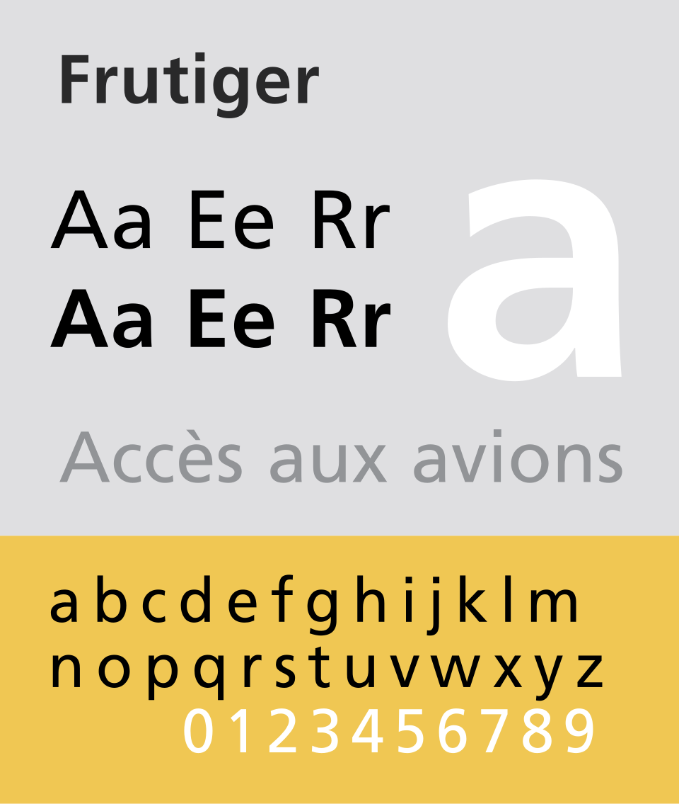

References / Typeface / 34
Frutiger typeface
Adrian Frutiger’s humanist sans-serif for airport signs, and the other half of the style’s name.
- Source
- Wikipedia: Frutiger (typeface)
- Creator
- Adrian Frutiger
- Made
- 1976 (public release by Stempel with Linotype; developed from the Roissy signage type of 1970/71)
- Style
- Frutiger Aero (namesake; agent-proposed, not yet reviewed by a person)
- Moods
- Clear, friendly, humanist
- Evidence
- Inspected the public-domain specimen File:FrutigerSpec-1.svg, rendered by Wikimedia at 960 px wide, and stored it.
- Reviewed
- Rights
- Open license, stored. License: public domain. Rights policy

Context
Frutiger is a humanist sans-serif by Adrian Frutiger. It is the text version of Roissy, commissioned in 1970/71 for the signs of Charles de Gaulle Airport, and was released publicly in 1976 by Stempel with Linotype. Wikipedia: Frutiger).
CARI says the name joins Vista’s “Aero” guideline with Frutiger’s typeface, “which originally inspired Vista’s default font (Segoe UI).” CARI: Frutiger Aero.
Avcı notes that Frutiger “was not used in the Aero, TouchWiz, or MacOS X interfaces associated with the movement,” so the name can mislead. Avcı 2024, “Physical reflections of digital aesthetics”, pp. 463–464. See Segoe UI.
Observed
- Letters are open and round with wide apertures: the a, e, and c curl in only slightly.
- The a is double-storey; the g is single-storey; the i has a square dot.
- The large lowercase x-height makes the specimen’s lowercase nearly as tall as the capitals.
- The specimen shows the airport phrase “Accès aux avions” in gray.
Why it belongs
The link to the style is typological, not literal: the era’s interfaces used humanist sans-serifs with the same openness and warmth, and Frutiger stands for that family in the name.
Borrow
Pair glossy surfaces with an open humanist sans-serif, not a geometric or grotesque one. The warmth of the letters carries the “friendly technology” tone.
Measured
Machine-extracted by tools/image-traits.py on . Full measurement.
- Mean chroma
- 0.19
- Palette
- #dfdfe1 56%
- #f0c753 29%
- #ffffff 5%
- #000000 3%
- #909295 1%
- #282829 1%
- #a1a2a4 0%
- #efdba3 0%

